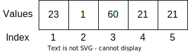
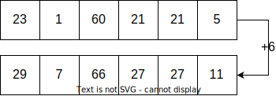
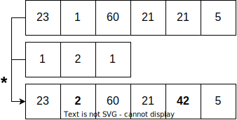

R02: Vectors
- most important data structure in R
- building block for more complicated structures
- created with the function
c() - think about a container where you can put in multiple things
- vectors are atomic - each entry has to be from the same value type
- each element has an index with which it can be accessed
c(23, 1, 60, 21, 21)[1] 23 1 60 21 21# vectors are atomic
c(23, 1, 60.5, 21, 21)[1] 23.0 1.0 60.5 21.0 21.0# to actually use a vector we have to assign it to a variable
vec = c(23, 1, 60, 21, 21)Vector Maths

- most of the functions in R are “vectorised”
- i.e. functions are applied to all the elements in a vector
vec1 = c(23, 1, 60, 21, 21, 5)
vec1 + 6[1] 29 7 66 27 27 11vec2 = c(5, 1000, 5, 1000, 5, 1000)
vec1 - vec2[1] 18 -999 55 -979 16 -995
# be careful with vectors of different length!
vec3 = c(1, 2, 1)
vec1 * vec3[1] 23 2 60 21 42 5vec4 = c(1, 2, 1, 2)
vec1 * vec4[1] 23 2 60 42 21 10Vectors and functions
The vector below are the temperature values for the Aasee in Münster from the 2021-06-02.
temperature <- c(18.81,18.73,18.92,18.87,18.76,18.79,18.87,18.84,18.89,18.89,
18.93,18.95,18.92,18.97,19.00,18.99,19.00,19.00,18.99,19.00,
18.98,18.97,18.97,18.97,18.97,18.98,18.96,18.94,18.94,18.91,
18.90,18.89,18.87,18.85,18.85,18.84,18.83,18.81,18.81,18.81,
18.81,18.81,18.80,18.79,18.80,18.79,18.79,18.78,18.77,18.78,
18.79,18.79,18.79,18.79,18.79,18.79,18.80,18.79,18.81,18.80,
18.81,18.81,18.82,18.84,18.87,18.89,18.89,18.91,18.96,19.02,
19.11,19.15,18.95,18.92,18.84,18.85,18.96,18.92,18.95,18.95,
18.91,19.00,19.02,19.06,19.05,19.47,19.32,19.05,19.66,19.57,
19.23,19.42,19.36,19.66,19.79,19.81,19.99,21.10,21.94,22.52,
22.81,22.43,22.16,21.55,21.80,21.02,21.85,21.45,22.48,22.73,
22.61,22.83,20.85,20.68,19.76,19.81,19.74,19.58,19.35,19.40,
19.75,19.76,19.85,19.82,19.86,20.08,20.06,19.85,20.04,19.90,
19.96,20.12,19.94,20.20,20.17,20.31,20.17,20.37,20.36,20.13)Indexing
For many questions it is often required to access only parts of the data. This is one of the most common things you have to deal with in R.
To access single values of a vector, use square brackets [].
# get the third value of the vector
temperature[3][1] 18.92# accessing multiple elements at once
temperature[1,2]Error in temperature[1, 2]: incorrect number of dimensionstemperature[c(1,2)][1] 18.81 18.73What is an easy way to access the first 10 elements of the vector?